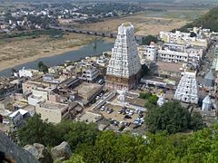
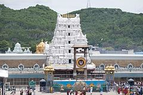
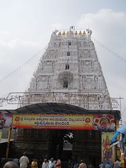
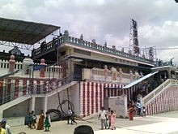
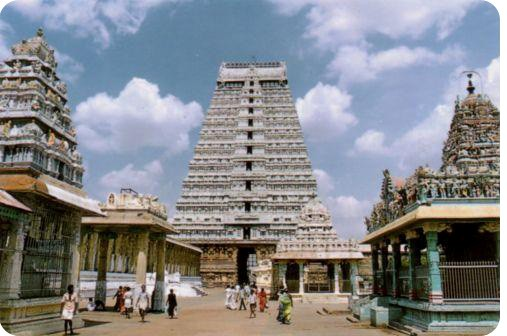
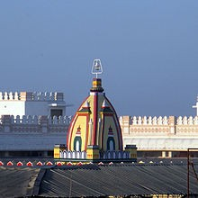

A practical guide for pilgrims planning the sacred Balaji darshan and seva booking.
At the Balaji temple of Thirumala, various sevas such as Special Darshan, Suprabhatam, Archana, and Kalyanostavam are conducted. All these sevas can only be booked online.
For booking, one must visit www.ttdsevaonline.net. The first step is to register. Name, address, Aadhaar number, email id, and mobile number need to be correctly enrolled. A photo also has to be uploaded, and the photo size must not exceed 10 KB. Reducing a photo to this size is genuinely tricky — various methods are described on Google. So, before registering, keep your passport-size photograph of 10 KB ready on the desktop.
After registration, they provide a password through your registered mobile number. The user ID will be your email id. Whenever you want to book, you can visit the site, log in using your user ID and password, choose the seva, find a suitable date, and complete the booking. Payment can be made by net banking, debit card, or credit card. Accommodation can also be booked.
After booking, two copies of the booked ticket — one for entry and one for collection of prasadam — must be printed and carried. Original ID proof for both the primary devotee and the accompanying person (the same as mentioned during booking) must also be carried.
For Kalyanostavam, traditional dress is mandatory. Gentlemen must wear a dhoti and an upper vastra to cover the body — banians and shirts are not allowed. Ladies must wear a saree or salwar kameez with dupatta.
The reporting time is specified on the ticket. Once booked, there is no provision to cancel.
I had booked the Kalyanostavam for 6th March 2017. Subsequently, I booked a reservation on the Chennai Express for 4th March on the Senior Citizen quota, departing from Pune at 18:00 hrs. The train was right on time. The 3rd AC coach was quite crowded. The train reached Renigunta the following noon, around 12:30.
We got down at Renigunta. The bus stand is conveniently close to the station. We took a bus to Tirupati — Tirupati is the base of the mountain and Thirumala is the peak. The journey from Renigunta to Tirupati is about 30 minutes.
Close to the main bus stand of Tirupati, we took a room at a hotel called Vikram. The weather was quite hot, so we opted for an AC room.
After freshening up, we decided to visit Sri Kalahasti. It is about 50 km from Tirupati, roughly an hour away by bus.

The temple was not very crowded that day, so we stood in the queue for about 30 minutes and had a peaceful darshan. The presiding deity is Srikalahasteeswara (Shiva), also called the Vayu Lingam, and the Goddess is Gnana Prasunambika Devi (Parvati).
We finished dinner at one of the hotels in Sri Kalahasti and took a bus back to Tirupati. We returned to our room around 9 pm.
We left the room around 6 am. We did not take our mobile phones with us — just the purse, tickets, IDs, and a polythene bag for collecting laddus. Having left so early, we could only manage a coffee before heading out.
Tirupati to Tirumala is an hour's travel. Frequent bus services are provided. Just before the entrance to Tirumala, there is a security check where passengers' luggage is X-rayed. After the check, we board the bus again.

We reached the Tirumala bus stop at around 8 am. A place called Subhadam is the entrance point, about a kilometre from the bus stop. We reached there, showed our ticket and IDs, and were allowed to stand in the queue. Our ticket and ID were checked at several points, and we underwent a security check before being allowed into a waiting hall. We could sit there and were provided breakfast and milk. Washroom facilities were also available.
After about an hour, we were allowed to move to the hall where the Kalyanostavam takes place. This hall is quite large and thousands of people assemble there. They are asked to sit on the floor. For those who cannot sit cross-legged, elevated platforms are provided along both sides of the hall.
The Kalyanostavam function lasts about an hour. It begins with the Sankalpa. Subsequent events — Kanya Danam, Panigraham, and Thirumangalyam — take place one by one, concluding with Mangalaarti.
Then the thousands of attendees form a queue in batches and join the regular darshan queue at the nearest point. At this junction, there is a very large crowd and the queues are not orderly — there is a great deal of pushing and jostling. For aged persons, it is difficult to pass through this bottleneck and have darshan. After darshan, to exit the sacred sanctum, one must leave through the same entrance used to enter, which again creates the possibility of a stampede.
This single-entrance policy for both entry and exit has been followed for many years, and it is believed that creating separate entry and exit points would adversely affect the sanctity of the temple.
The entry and exit to the sanctum is managed at a fixed frequency — devotees are allowed in for 2 minutes, then the incoming queue is stopped and the outgoing crowd is guided out for 3 minutes, after which the cycle repeats.
Then comes another somewhat haphazard queue for obtaining prasadam — each person receives one laddu free of charge. A separate counter is there for Kalyanostavam participants, where they give two big laddus, three medium-sized laddus, and two pepper vadas of about ten inches in diameter.
After collecting the prasadam, we safely exited the temple, collected our chappals from the stand, and walked to the bus stop. Fortunately, plenty of buses were available. We reached Tirupati and had lunch around 3 pm, then returned to our room for some rest.
This place is also called Alamelumangapuram. A beautiful temple here is dedicated to Goddess Padmavati. Normally, those who visit Tirupati also visit this temple.
Thiruchanur is about 4 km from the main bus stand of Tirupati, and frequent bus services are available.

At this temple, there can sometimes be a long queue, but there is no mad rush — it is manageable. Laddu prasadam is sold here as well. Each laddu costs ₹10. Coupons are issued at one counter and laddus are collected at separate counters. They do not provide polythene bags, so one should carry bags along.
When we visited, there was no big crowd. We had a peaceful darshan and returned to our room.
We left early morning around 6 am. We took an auto from Tirupati to Renigunta and boarded the Tirupati–Chennai Express, which leaves Renigunta at 7:30 am. We arrived at Tirutani around 9 am. We deposited our bags in the railway station cloak room and went to the bus stand for breakfast.

This temple is situated on a hill, with 365 steps leading to the top. It is one among the Arupadaiveedu — the six holiest temples dedicated to Lord Murugan. It is believed that this temple has existed since the Sangam period, some 2,000 years ago. The presiding Goddess here is Valli.
The temple is kept open throughout the day from 6 am to 9 pm. There is no dress code — one can enter with normal clothing such as pants and shirts.
We reached the temple around 11 am and had a wonderful darshan. After spending about an hour there, we came down, had lunch, and rested in a hotel for some five hours. We reached Tirutani station around 6 pm.
We had reserved seats on the train to Chennai. We boarded at 7:30 pm and reached Chennai Central around 9 pm. Our plan was to proceed to Thiruvannamalai, with a connecting train from Chennai Egmore departing at 9:45 pm. We had to run from Chennai Central to Egmore to catch it.
As Dindivanam is closer to Thiruvannamalai but Vilupuram is a larger town, we decided to stay the night at Vilupuram. We arrived there at midnight and, being unable to search for a good hotel at that hour, found one close to the station and took an AC room for the night.
We left around 7 am in the morning. Thiruvannamalai is about 50 km from Vilupuram. Buses are available from the Vilupuram main bus stand and the travel time is around 2 hours.

We reached Thiruvannamalai around 11 am. It is a fairly large and magnificent temple. After darshan, we had lunch at a hotel and stayed in the temple praakaram until 3 pm.
This temple is dedicated to Lord Shiva, who is worshipped here as Annamalayar. Goddess Parvati is called Unnamalai. It is one of the larger temples of South India — its gopuram is the 3rd tallest among South Indian temples. A giant Nandi is erected at the entrance. The revered saint Sri Ramana Rishi was closely associated with this temple. There is a Padala Lingam (below ground level) — a separate sacred chamber within the temple complex where Sri Ramana Rishi used to meditate.
Around 3 pm, we hired an auto for the Girivalam — the sacred circumambulation of the hill. Around the Tiruvanamalai temple, there are eight lingas and three ashrams, which we visited. The auto fare for the Girivalam was ₹350.
During the Girivalam, we had darshan of the eight Ashta Lingams: Yama, Varuna, Kubera, Indra, Agni, Niruthi, Vayu, and Isanya.
We also visited the Ramana Rishi Ashram during the Girivalam. In this ashram, the sage lived and gathered many followers. Even during his lifetime, people came from different countries for meditation and to seek his blessings. Even now, foreigners visit this place — some stay for months at a time to meditate.
After the visit, we returned to the Tiruvanamalai main bus stop and took a bus back to Vilupuram. We reached the hotel around 10 pm.
By 5:30 am, we left the hotel and came to Vilupuram station. We had booked seats on the Pondicherry–Chennai Express, departing Vilupuram at 6:30 am. We reached Chennai Egmore around 8:30 am, then took a suburban train to Park Station and proceeded to Chennai Central. We had breakfast at the Central station.
We boarded the Chennai–Mumbai Express at 11:45 am. We reached Mantralayam Road almost at midnight. Luckily, a share auto was available to take us to Mantralayam — about an hour's ride. We took a room at Mantralayam for the night.
In the morning around 7 am, after breakfast, we went to the Mantralayam temple. After darshan at the Brindavana,

we decided to visit the Pancha Mukha Anjaneyar temple. We visited this temple and the Appanna Ashram by share auto.
After lunch, we returned to the hotel and took rest. Around 6 pm, we went to the temple again and witnessed the evening Aarti. Every evening around 7:30, a beautifully decorated rath procession circles the temple — we watched this procession with great joy. We then had food at the temple devasthanam and returned to our room.
Around 6 am, we left the devasthanam room and took an auto to Mantralayam Road railway station. That morning, we also went to the temple one final time, offered our prayers, had breakfast, and then made our way to the station.
We boarded the train around 11:30 am at Mantralayam Road station and reached Pune at midnight. We took an auto home and arrived safely.
This eight-day pilgrimage through the sacred heartlands of South India was a spiritually enriching and logistically rewarding adventure. From the awe-inspiring queues and rituals of Tirumala — where thousands of devotees gather in collective faith — to the serene circumambulation of Thiruvannamalai's ancient hill, each destination offered its own distinct spiritual essence.
Sri Kalahasti's Vayu Lingam, Thiruchanur's gentle Padmavati Devi, Tirutani's hilltop Murugan atop 365 steps, the Ramana Rishi Ashram's meditative stillness, and Mantralayam's evening rath procession — together they wove a tapestry of devotion that transcended mere sightseeing. The journey required careful planning, especially the early online booking for the Kalyanostavam, and a readiness to navigate crowded temple corridors and overnight train connections with patience and grace.
For senior pilgrims, the path demands extra vigilance at bottlenecks — yet the prasadam, the darshan, and the deep sense of divine presence make every step profoundly worthwhile.